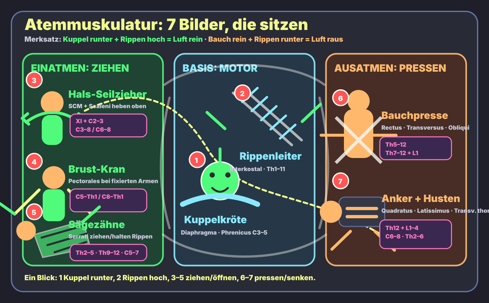

Basis
Diaphragma ist der Hauptmotor. Interkostalmuskeln machen die Rippenmechanik.
repariert · echte Bilder oben · prägnant lernbar
Kuppel runter + Rippen hoch = Luft rein. Bauch rein + Rippen runter = Luft raus.
Die alte überladene SVG-Karte wurde ersetzt: oben stehen jetzt echte sichtbare Bilder und eine einfache 7-Haken-Route. Die 7 Bilder sind die Merkroute; die 18 Einzelmuskeln mit Innervation bleiben unten als Wahrheitslayer.
Das ist die reduzierte Lernkarte: nicht alles auf einmal, sondern genau die Gruppen, die du im Kopf behalten musst.

Das Bild ist der Gedächtnisort: Thorax als Schiff/Manufaktur. Die roten Punkte sind die Route; rechts daneben steht der jeweils einfache Lernhaken.

1 Kuppel runter · 2 Rippen hoch · 3–5 ziehen auf · 6–7 pressen zu.
Diaphragma ist der Hauptmotor. Interkostalmuskeln machen die Rippenmechanik.
Bei Atemnot ziehen SCM/Scaleni oben, Pectorales mit fixierten Armen, Serrati an Rippen/Scapula.
Ruheausatmung ist passiv. Aktiv wird es mit Bauchpresse, Lendenanker, Latissimus-Husten, Transversus thoracis.
C3–5 Phrenicus. Thorakalnerven für Interkostal/Bauch. C5–7 langer Thoraxnerv für Serratus anterior.
Wenn du die Figuren einzeln wiederholen willst: diese Tafel zeigt viele Muskel- und Nerven-Hooks als Detailansicht; die prüfbare 18er-Liste steht darunter.

Oben lernst du 7 Bilder/Gruppen; hier steht die vollständige Einzelmuskel-Liste mit Innervation.
| # | Bild / Muskel | Gruppe | Innervation | Aktion |
|---|---|---|---|---|
| 1 | Zwerchfell-Kuppelkröte Diaphragma | Basis / Inspiration | N. phrenicus C3–5 | Kuppel senkt sich → Thoraxvolumen ↑ |
| 2 | Rippenleiter-Akrobaten Interkostalmuskulatur | Basis / Rippenmechanik | Nn. intercostales Th1–11; N. subcostalis Th12 | Rippenmechanik: äußere Fasern heben, innere/interosseöse helfen forcierter Exspiration |
| 3 | Sterno-Kleido-Mastoid-Kapitän M. sternocleidomastoideus | Inspiratorische Atemhilfe | N. accessorius XI + Rr. ventrales C2–3 | hebt Sternum/Clavicula bei fixiertem Kopf |
| 4 | Vordere Skalenen-Stufe M. scalenus anterior | Inspiratorische Atemhilfe | Rr. ventrales C4–6 | hebt 1. Rippe |
| 5 | Mittlere Skalenen-Stufe M. scalenus medius | Inspiratorische Atemhilfe | Rr. ventrales C3–8 | hebt 1. Rippe |
| 6 | Hintere Skalenen-Stufe M. scalenus posterior | Inspiratorische Atemhilfe | Rr. ventrales C6–8 | hebt 2. Rippe |
| 7 | Großer Pectoralis-Kran M. pectoralis major | Inspiratorische Atemhilfe | Nn. pectorales medialis/lateralis C5–Th1 | bei fixierten Armen: starker Inspirationshelfer |
| 8 | Kleiner Pectoralis-Page M. pectoralis minor | Inspiratorische Atemhilfe | N. pectoralis medialis C8–Th1 | zieht Rippen 3–5 nach oben bei fixierter Scapula |
| 9 | Oberer Sägezahn-Engel M. serratus posterior superior | Inspiratorische Atemhilfe | Nn. intercostales Th2–5 | hebt obere Rippen |
| 10 | Unterer Sägezahn-Kobold M. serratus posterior inferior | Inspiratorische Atemhilfe | Nn. intercostales Th9–12 | zieht untere Rippen kaudal/lateral; je nach Quelle Atemhilfe |
| 11 | Vorderer Sägehai-Boxer M. serratus anterior | Inspiratorische Atemhilfe | N. thoracicus longus C5–7 | fixiert Scapula; bei fixiertem Schultergürtel Rippenhebung |
| 12 | Gerader Bauchritter M. rectus abdominis | Exspiratorische Atemhilfe | Nn. thoracoabdominales Th7–12 | Bauchpresse, Rippen runter |
| 13 | Quer-Korsettmeister M. transversus abdominis | Exspiratorische Atemhilfe | Nn. thoracoabdominales Th7–12 + L1 | komprimiert Bauchwand |
| 14 | Äußerer Schrägschärpen-Krieger M. obliquus externus abdominis | Exspiratorische Atemhilfe | Th5–12 | Bauchpresse + Rotation; Rippen nach kaudal |
| 15 | Innerer Gegenschärpen-Krieger M. obliquus internus abdominis | Exspiratorische Atemhilfe | Th7–12 + L1 | Bauchpresse + Rotation |
| 16 | Quadratischer Lendenanker M. quadratus lumborum | Exspiratorische Atemhilfe | N. subcostalis Th12 + Plexus lumbalis L1–4 | fixiert 12. Rippe |
| 17 | Breiter Husten-Schwimmer M. latissimus dorsi | Exspiratorische Atemhilfe | N. thoracodorsalis C6–8 | Hustenmuskel; komprimiert Thorax bei fixierten Armen |
| 18 | Brustbein-Schilddrücker M. transversus thoracis | Exspiratorische Atemhilfe | Nn. intercostales Th2–6 | senkt Rippenknorpel |
Muskelgruppen nach DocCheck Flexikon „Atemmuskulatur“; Innervationen nach gängigen anatomischen Angaben. Die Bilder sind Gedächtnishaken, der Wahrheitslayer ist die prüfbare Faktentabelle.